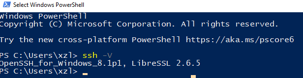
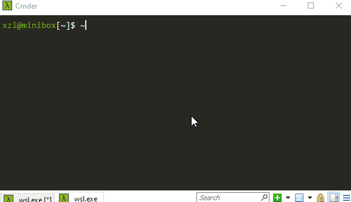
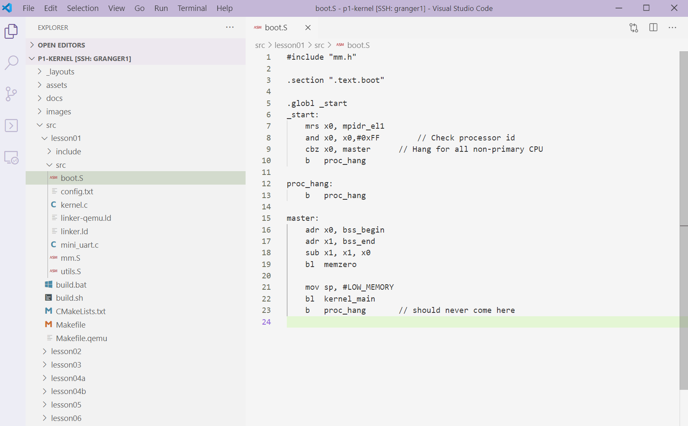
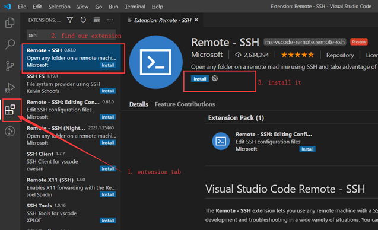
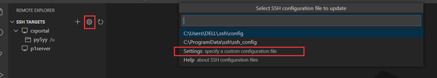
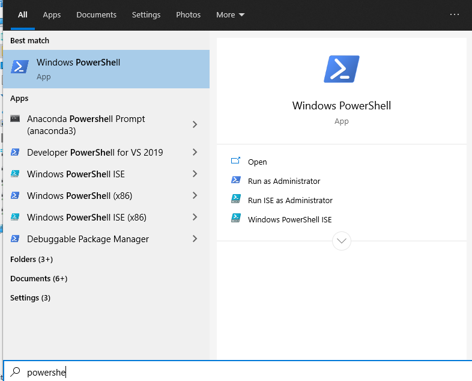
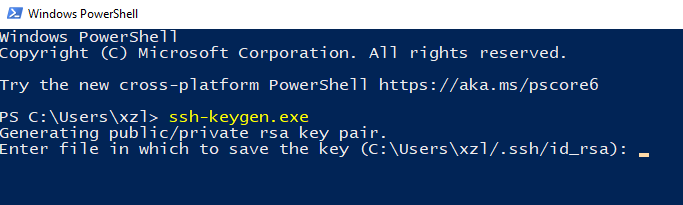
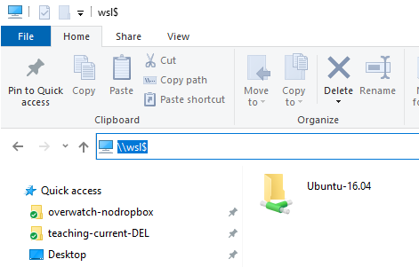
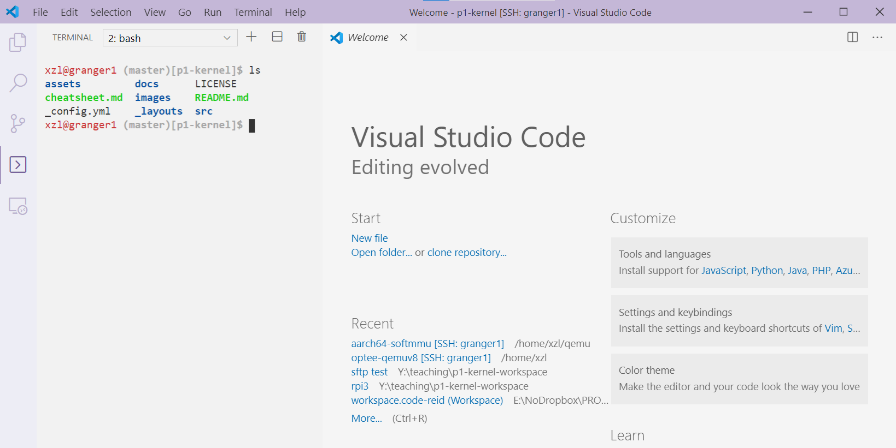
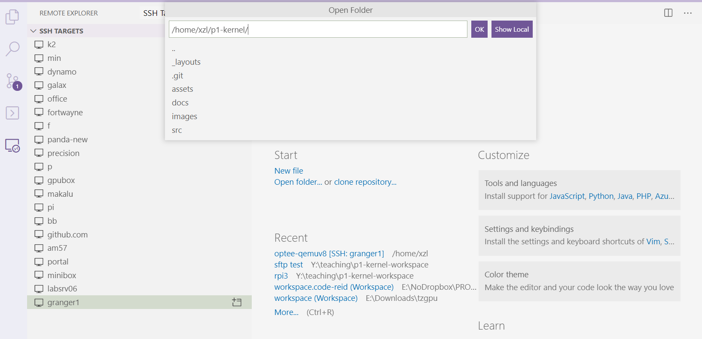

Accessing the course server(s)
Last updated: 1/26/2024
This document describes server resources and how to connect for development.
Applicable to local machine: Windows, Linux, & Mac
| hardware specs | OS | |
|---|---|---|
| granger1.cs.virginia.edu | Dual Xeon 2630v4 Broadwell (10c20t), 20 cores | Ubuntu 20.04 LTS |
| granger2.cs.virginia.edu | Dual Xeon 2630v4 Broadwell (10c20t), 20 cores | Ubuntu 20.04 LTS |
-
VPN: If you are off the grounds, you must connect the UVA VPN first. These servers are behind the campus firewall.
-
Login credentials: Use your CS account (NOT your UVA computing ID/password).
-
Forgot password? https://www.cs.virginia.edu/wiki/doku.php?id=accounts_password
-
For non-CS students without CS server accounts, email cshelpdesk@virginia.edu asking for creating an account, stating that you are in CS4414 and need access to granger1/2
-
Server storage: home directories are shared, meaning that files modified on granger1 will be available on granger2, as well as other CS servers like portal.
-
Load balance: As the semester begins, TAs may inform you which server you should use primarily.
Note to Windows machine owners
Your machine has two separate SSH clients (with separate configurations).
Windows native SSH client. It's a Windows program. Configuration: c:\users\%username%\.ssh\
When you type ssh from CMD or PowerShell, this is what you will invoke.
This is also what VSCode's remote explorer will invoke. It will load the above configuration file. If VSCode SSH won't work, this SSH client needs to be configured (read on).

WSL's SSH client. It's a Linux program in the WSL virtual machine. Configuration: (inside WSL): ~/.ssh/
It is only invoked if you type ssh within WSL environment. VSCode's remote explorer is not concerned with this SSH client.
Step 1: Terminal over SSH
Reference: CS wiki https://www.cs.virginia.edu/wiki/doku.php?id=linux_ssh_access
The picture below shows: from a local terminal (e.g. called "minibox"), connecting to a course server by simply typing ssh granger1. Read on for how to configure.

1.1. Use key-based authentication in lieu of password
In the example below:
- "granger1" is used. Replace it with "granger2" as needed.
- Windows owners:
- to configure Windows native ssh (needed by VSCode in p1), use configuration path
c:\users\%username%\.ssh\; type commands from Windows CMD or PowerShell - to configure WSL ssh (needed by future projects), use configuration path
~/.ssh; type commands from the WSL shell. - you are recommended to configure both.
The pub key on your local machine is at ~/.ssh/id_rsa.pub. Check out the file & its content. If it does not exist, generate a pub key by running ssh-keygen.
# on the local console -- Mac, Linux, or Windows (WSL/CMD/PowerShell)
$ ssh-keygen
Generating public/private rsa key pair.
Enter file in which to save the key (/home/xzl/.ssh/id_rsa):
Now, append your public key to granger1 (~/.ssh/authorized_keys). A quick way is by command ssh-copy-id. For instance:
# copy the pubkey from your local machine to granger1
$ ssh-copy-id xl6yq@granger1.cs.virginia.edu
(... type in password ...)
# next time, it should no longer ask for password
$ ssh xl6yq@granger1.cs.virginia.edu
Troubleshooting: the server still asks for password?
Still use granger1 as an example.
- On granger1, check the content of ~/.ssh/authorized_keys. You should see your public key saved there. For instance, mine is:
$ cat ~/.ssh/authorized_keys
ssh-rsa AAAAB3NzaC1yc2EAAAADAQABAAABAQCkkCZ2PO7GdX5CBL26zcIFz4XgMiHSQjaU32evuidvMXsC
ZExT9QHl3Ou00QfuagmfebugxB0aruGAsKmBxEBmlj0r1uAVCekYaIn8IPA5jynQnDRDdIABaZBWlsPx9jKo
KQqLlKgdG4JziQOAr0HaUgr+oIXgRUq7V/W1OhV9SQVF+vcIy8vVwNdLBNdbw/GtU0oKb76yxfXOC/VZM7eZ
xhovb/J450U5Op8tL/+Lg5x2sJKqR2juCFAicGbVNuXXazEDrXHgDQp+WQS8rYK4Zs95KqAsMfxvsFSbs8lf
h0pIs+sozBNUt+1noJkcyLfxhzu0yGEsxMULHE/KdAst xl6yq@portal03
- On granger1, check the permission of ~/.ssh. It should be:
$ ls -la ~ | grep .ssh
drwx------
Check the permission of ~/.ssh/authorized_keys. It should be:
$ ls -l ~/.ssh/authorized_keys
-rw-------
If none of the above works, you can put ssh in the verbose mode to see what's going on. From your local machine, type
ssh -vv granger1.cs.virginia.edu
Explanation: -vv tells ssh to dump its interactions with granger1 on negotiating keys. As a reference, my output is here. At the end of the output, you can see granger1 accepts my key offered from portal.
Note to Windows Users: the native ssh-copy-id.exe (the one you invoke from PowerShell or CMD) was reported to show caveats. See here. Not sure if it fixed in newer Windows. If no luck, consider manual copy & paste the key.
1.2. Save connection info in SSH config
Append the following to your ssh client configuration (~/.ssh/config). Replace USERNAME with your actual username:
Host granger1
User USERNAME
HostName granger1.cs.virginia.edu
Host granger2
User USERNAME
HostName granger2.cs.virginia.edu
With the configuration, you can type from your local machine:
$ ssh granger1
# or
$ ssh granger2
Step 2: Remote development with VSCode
Below we use Windows as the local machine example. Linux/Mac should be similar (even fewer caveats)
End results: being able to develop, compile, and do version control -- all from the VSCode IDE.

We will use VSCode's official Remote.SSH extension, which will connect to the course server using Windows native SSH. An official tutorial is here.
To do so you install the "Remote development" package which will install the "Remote.SSH" extension for VSCode.

After installation, click "Remote Explorer" on the left bar. The extension will pick up your ssh config file (again that's C:/Users/%USERNAME%/.ssh/config) and present a list of hosts recognized. Click one to connect to it. The extension will copy a bunch of stuffs to the host and launch some daemon on the host. Then you are connected.
Warning - 3rd party VSCode extensions
When opening a large codebase on the server, these extensions may consume lots of resources and hang the server. This happened repeatedly before.
If that happens, TAs have to manually kill your server processes.
Windows owners: ssh keys
The extension (Remote.SSH) will invoke Window's ssh client (c:\Windows\System32\OpenSSH\ssh.exe).The Window's ssh client expects its config file at C:\Users\%USERNAME%\.ssh\config. This is NOT the ssh client you run from WSL.

If you haven't generated your SSH keys so far, you can do so by launching a PowerShell console and run ssh-keygen there.
|  |  |  |
|---|---|---|
| Launch PowerShell | ssh-keygen in PowerShell | Access WSL root |
Or, you can you copy existing ssh keys and config (e.g. from WSL ~/.ssh/) to the location mentioned above. Btw, the way to access WSL's root filesystem is to type \\wsl$ in the explorer address bar. See the figure above.
Launch a terminal
After connection, click "remote" on the left bar to bring up a remote terminal, in which you can execute commands to build projects, etc. Make sure to click the "+" sign to create a new shell terminal.

File browsing & editing
Then you will specify a remote folder on the server to "open":

To browse & edit files on the server, click "explorer" on the left bar
Click "source control" on the left bar for a handy git interface.
Copy files to/from the server
Just drag and drop the files between VSCode's file list and your local directory.
Troubleshooting
Things like Windows auto update may break VSCode's ssh configuration that worked previously. In this case, try deleting (or moving to other places) the .vscode-server folder on the course servers (under the p1-kernel/ directory), close all remote connections, and close the local VSCode program. Then start from a clean slate.
If things still break, seek help from the online discussion forum. Provide the following information:
- the error message of VSCode
- the PowerShell output when you try to connect to granger1 from the PowerShell command line. Have you tried granger2?
- any recent Windows/VSCode updates?
- any other relevant information